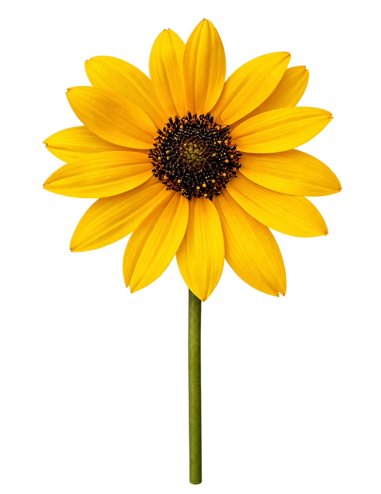
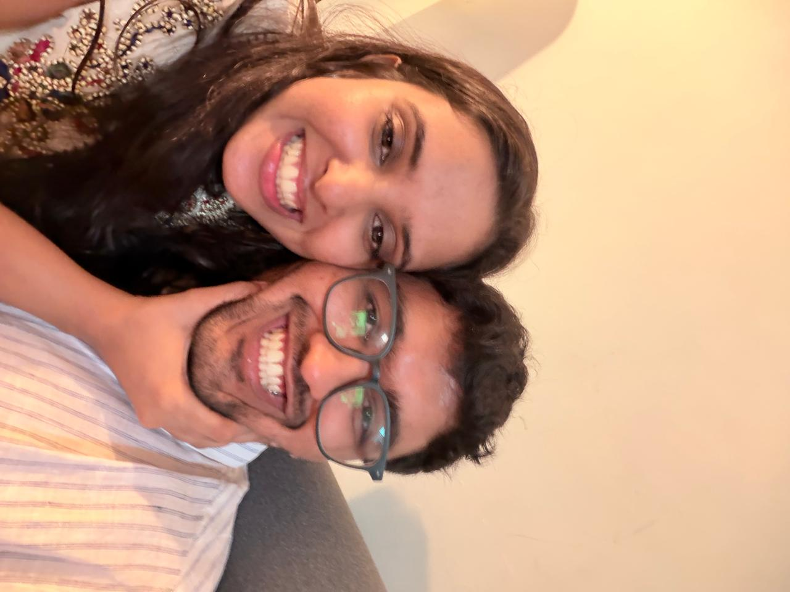

BLOOM


With you, even the ordinary days feel sunlit.
The way sunflowers turn toward light, I keep turning toward you.
GrowthJoyUs
A little light, wherever we are
Some people feel like sunshine. You feel like the place I want to grow.
May we keep finding the light in each other, even on the cloudiest days.
If love is a sunflower, ours is all the little ways we turn toward each other.